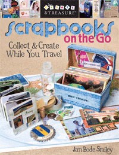

Scrapbooks on the Go
Collect & Create While You Travel
Author: Jan Bode Smiley
Get It Done While You're Gone!
• Create unique pages and scrapbooks AS YOU TRAVEL - they're finished when you get home
• Prep your supply kit: it's quick, fun, and very easy to pack
• Add anything and everything - maps, ticket stubs, postcards, brochures, programs, drawings, shells, stones, feathers, keys, menus, trinkets...
• Photo options! Print as you go on your portable printer, at self-service kiosks, or simply leave space for photos to be printed and added at home
• Journal your thoughts while they're fresh in your mind
• Jan's amazing Scrapbooks on the Go show dozens of ideas
Raise your hand if you have drawers full of treasures and mementos you've been meaning to scrapbook. Help is on the way, as favorite author Jan Smiley shares an easy and fun way to scrapbook while you travel! Spending just a few minutes a day lets you return home with a beautiful, finished scrapbook to share and cherish. Use all the little bits you collect along the way, jot down the story of your trip, and you can return to those special places again and again.
Review By: Judi Kauffman, Paperworks - April 1, 2007
"A fresh new approach to scrapbooking: create pages and books as you travel, and when you arrive home, you've got the project all done and ready to enjoy! The author lists strategies for what to pack, what to collect, and with portable printers costing less each year, she also suggests printing pictures while on a journey.
As you might expect, there are lots of pockets and boxes, and the projects are all small in scale and lightweight. Even if the extent of your travel is only to and from the grocery store, the ideas will still be useful and interesting."
Review Savin' Some - January 9, 2009
"If you love to scrapbook, then this would be a great resource for you. "Scrapbooks On The Go" tells you how to create scrapbooks using the things that you collect when you travel, while you are traveling. There are several great ideas and examples featured in the book. I am personally guilty of bringing things home from our travels with the intentions of doing something with it, but I never know exactly what to do with it. This book was super helpful, and what better way to prevent it from sitting in a drawer at home forever, than to create your piece while you are actually on the trip..."
|